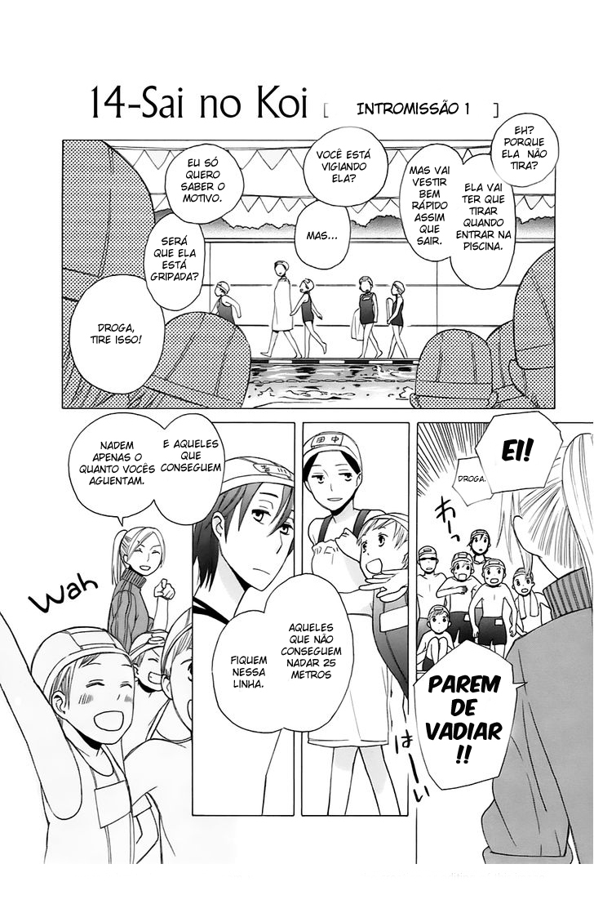
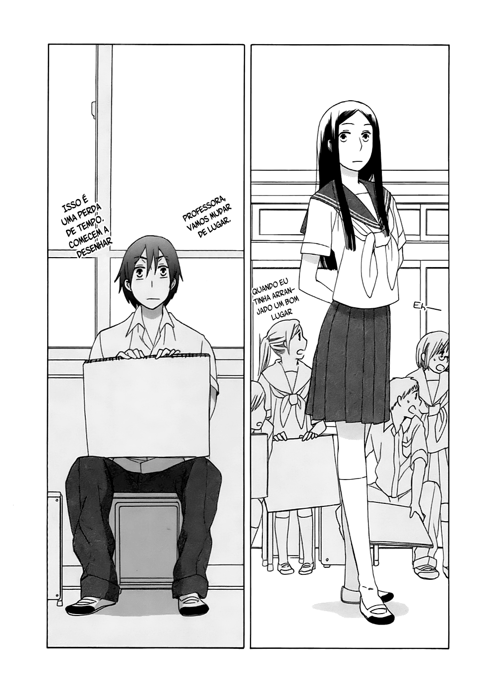

criado em 15/05/2021
A Vida escolar apresentada no mánga

Depois que li o mánga “Himura-san”, fiquei fascinado para ver mais aventuras envolvendo o tema vida escolar em mángas. Acabou me levando a querer descobrir como é contada as histórias a cerca de uma experiência que eu e muitos outros estudantes do colegial não puderam viver. Mais uma vez, acessei o site muitomanga.com e dei início a continuação a minha exploração, desta vez com o tópico vida escolar.
O mangá que escolhi foi “ 14-sai no koi” que é sobre um casal de estudantes adolescentes, onde toda a sua trama gira em torno de um colégio. Quando comecei a ler, percebi o quão similar era com a minha vida em si, porque ela era mesmo toda voltada a escola, junto com a mentalidade voltada para relacionamentos amorosos e e questões relacionadas a puberdade. Toda a experiência social surge de lá, o foco não era estudar em si, porque é uma atividade de muito desgaste e sem emoção.
A história é toda voltada para a vida social e novas descobertas e o tema é: amizade e relacionamento, como essas duas coisas funcionam? As mudanças acontecem e saber lidar com elas não é fácil. A opinião de outras pessoas também impacta na vida social, influencia em em escolhas e sentimentos. Tudo é novo e agir se torna algo que enchesse de dúvidas.

Todos os fatores de uma vida adolescente são apresentados e eu percebo que está de acordo com minha vida e isso acaba por me fazer gostar muito do tema. Ao olhar para os amigos, não se vê eles da mesma forma como antes, mudam e assumem posições diferentes, um exemplo mesmo é uma amiga de infância, que ao crescer, ela não é mais vista como apenas uma amiga, passa também a sentir algo a mais que apenas amizade.
Colegas e amigos passam a ser pessoas as quais podem te fazer mais companhia, devido estarem no mesmo nível e por passarem pelo mesmo. Sempre se chega em um ponto que ocorre com cada um de nós essas experiência. 14-sai no koi é a mais pura representação do que falo! Embora que haja coisas que muitos não puderam experimentar. Kanata, a garota mais madura ao lado de Youshikawa, outro rapaz bem maduro, mas maduro por fora, porque por dentro são muito fofos! Fazem parte parte deste incrível mundo que é o colegial no mánga.

Dois amigos desde infância que ao ficarem mais velhos, especificamente, aos seus 14 anos, passam a ficarem mais próximos, principalmente quando ficam a sós. Quando vão a piscina, enfrentam uma longa viagem para chegarem, ela de forma alguma quer mostrar seu traje, apenas para Youshikawa e ele ainda ficou com ciúmes por muitos olhavam para ela por estar usando uma toalha. Querer manter esse compromisso é algo que os dois querem, mas de forma escondida, assim como dois amantes!
É algo que ambos sentem um pelo outro e essa visão de amizade vai embora ao decorrer do momento em que eles nem mesmo conseguem olhar nos olhos em público, como quando Kanata é modelo para ser desenhada por todos. Sentimentos de ciúmes demostram que eles já não se veem como amigos a bastante tempo. Quando vão ao parque juntos, é um dos poucos momentos em que eles se encontram fora do ambiente escolar para ficarem juntos um com o outro.
Se chega em um ponto que não se é mais possível ter apenas relação de desejo e um momento isso acontece. O apice foi comprar algo que os dois pudessem usar durante a aula e é aí que penso, eles já estão bem próximos! A escolha é bastante difícil, já que tem que ser algo bastante e o nível de fofurice é tal que a escolha torna-se bastante rigorosa, eles acabam por escolher um par de pulseiras. O lugar onde eles compram a pulseira fica na escola e eles buscam um lugar discreto para poderem colocar e deve ser nós pés, por baixo da meia, então eles vão até uma sala vazia. Com a pulseira eles estariam conectados e ondem escolheram colocar ninguém poderia ver. Nesta mesma sala vazia, colocaram um no outro a pulseira e se pegaram olhando um nós olhos do outro e uma tímida expressão subiu em suas faces.